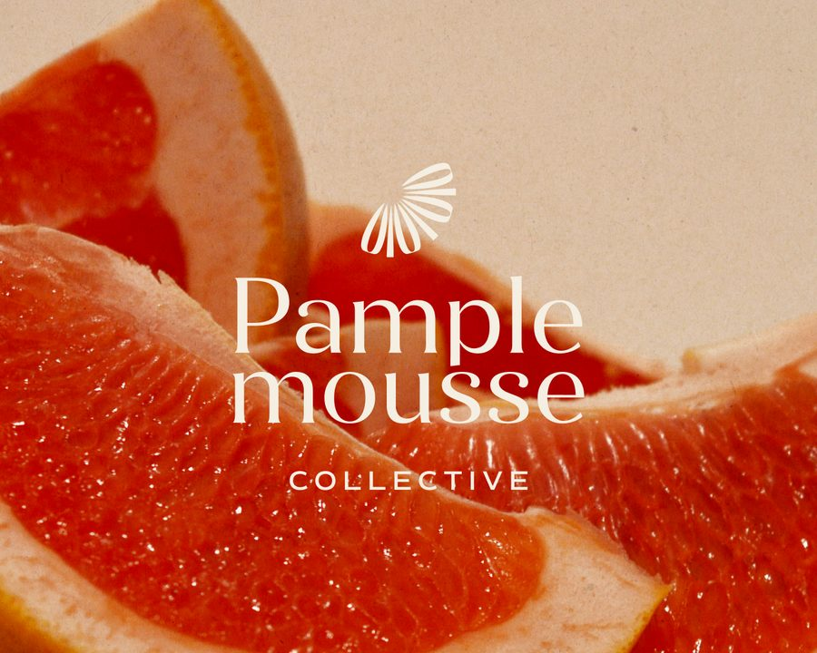

What to ask a white-label designer before you say yes
You're about to hand a client's brand to someone you've never worked with. A portfolio shows taste. These questions show how the person actually works.
 By Julia Sonda · · 4 min read
By Julia Sonda · · 4 min read

Hiring a white-label designer comes with an odd problem. The better someone is at white-label, the less they can show you. A lot of their best work has another agency's name on it.
So the portfolio only tells part of the story. It tells you about taste and skill. It doesn't tell you whether they answer emails, hit deadlines or quietly disappear in week three. That's what these questions are for.
For each one I've added what a good answer sounds like, from my side of the table. Feel free to ask me all of them.
1. Can I see work you did under someone else's name?
A white-label designer's public portfolio is always smaller than the real one. That's normal. What you're checking is whether they can show you more in private, with permission, and whether they're careful about it.
A good answer: “Yes, I can share a few examples privately, and here's what I can and can't say about each one.” A designer who forwards another agency's confidential files without blinking will do the same with yours.
2. Who actually does the work?
Some designers are the friendly face of a team, or pass work on to subcontractors. That isn't automatically bad, but you should know who's touching your client's brand.
A good answer is direct: who designs, who you talk to, and whether anyone else is ever involved.
3. Will you ever contact my client?
The answer should be no, unless you ask for it. Not during the project, not after it, not with a friendly message on LinkedIn. In white-label, the client relationship is yours.
4. What do you need from me in a brief?
This one tells you a lot. “Just send whatever you have” might mean the designer is flexible, or that they don't know yet what they'll need. A designer who asks about the client's audience, what's been promised and where the brand will live has clearly done this before.
I wrote more about what to put in a branding brief, if you'd like a starting point.
5. How do revisions work?
Ask what counts as a round, how many are included and what happens when the client changes their mind completely after round two. (It happens.) A good answer is clear and written down, not “we'll figure it out”.
6. How and when will I hear from you?
Communication is where most freelance relationships go wrong, more often than the design itself. Ask how they share progress, how quickly they usually reply and what happens if a deadline is at risk.
Time zones matter here too, and they can work in your favor. I'm in Spain, so for agencies in the US a lot of the work moves while they sleep. Time zones only become a problem when nobody agrees on when to talk.
She ALWAYS gets back to me ASAP and keeps me updated and in the loop at all times!
7. What will I get at the end?
Ask for the delivery list before the project starts: file formats, logo versions, color values, guidelines, templates. If the answer is “the logo files”, keep asking. A brand identity is much more than that, and your client will find out the first time they need a version nobody made.
8. Who owns the work, and when?
A good answer: the rights pass to you once the project is paid, and it's in writing. Ask about fonts and images too, since some licenses need to be bought by the client. And ask whether they'd like to show the work in their portfolio, so you can say yes or no before it turns into an awkward conversation.
9. How do you charge?
Fixed project fee, hourly or a monthly arrangement can all work. What matters is that you can quote your client with confidence. For a brand identity, a fixed fee with a clear scope is usually the easiest to sell. For ongoing support, hourly or monthly often makes more sense.
For the record, I work with fixed project fees and hourly pricing, depending on the work.
10. Can we start with something small?
The best answer is yes. One project is the cheapest way to find out whether you work well together, and a lot of agency partnerships start exactly like that.
A few answers that would worry me
- They'd like to join calls with your client “to save time”.
- They can't say who else works on the project.
- They don't ask a single question about the brief.
- Revisions are “unlimited”, which usually means the scope was never really defined.
- Everything is possible by tomorrow.
None of these makes someone a bad designer. They just make it harder to trust them with a client who isn't theirs.
Before you send the first brief
If you ask these and like what you hear, start with one project, keep the scope clear and pay attention to how the first round of feedback goes. That first round will tell you more than any portfolio.
And if you'd like to ask me these questions yourself, I'm happy to answer them. Send me a message and we'll find a time to talk. If you're new to all this, start with what white-label design actually is.